模型
metasequoia4[下载在QQ群]
3Dmax
MCTE
材质
AI 32x 64x
PS 32x 64x
画图
音效
编辑
DW 32x 64x
记事本
其他
adobe 18 pro注册机
1.1zip结构图
P1.1.1图片示例
P1.2支持格式
P1.2.1介绍
P1.2.1图片示例
P1.3图片纹理(显示)
P1.4声音追加
P1.5json的写法
P1.5.1普通
P1.5.2通用
P1.6js脚本
P1.6声音js
P1.6贴图js
T1_追加表[t1][##### T1__可追加表格]
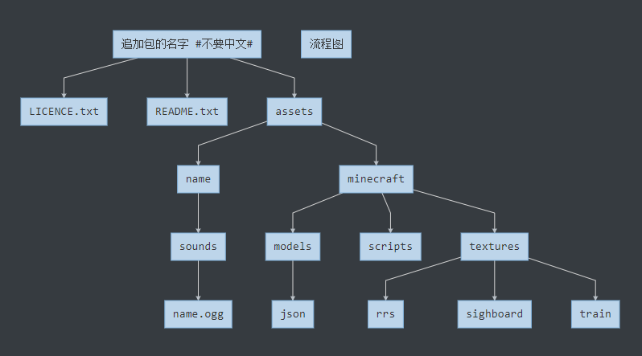
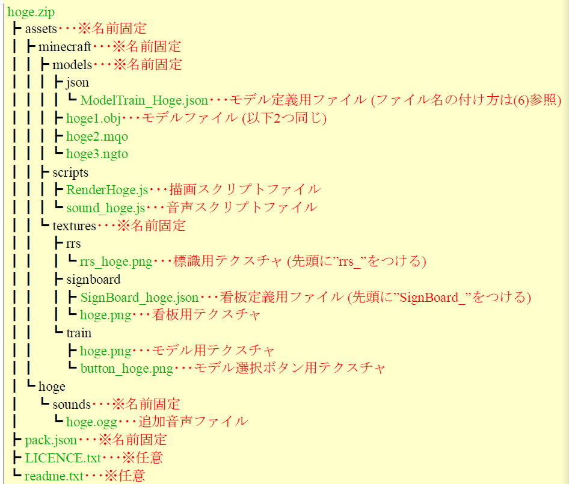
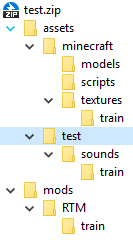
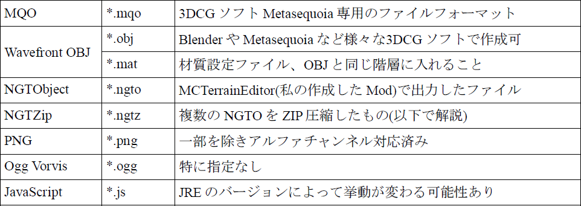
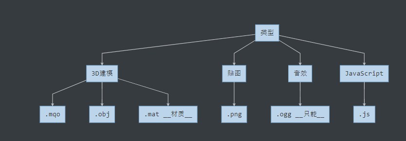
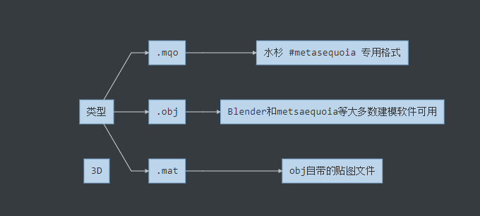
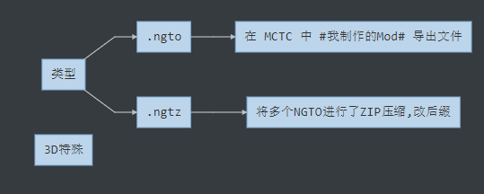
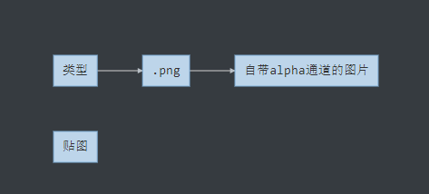
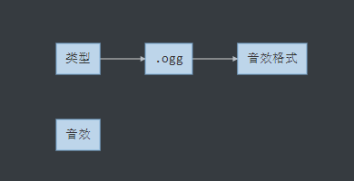
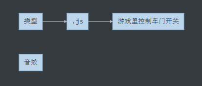
可参考assets/miecraft/textures/tarin/(# 不固定)/button_neme.png 外框=256px × 256px 按钮=160 × 32
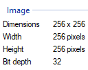
操作和创建步骤如下
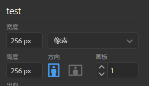
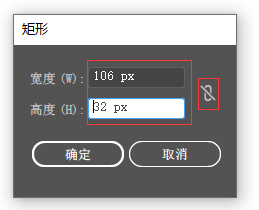
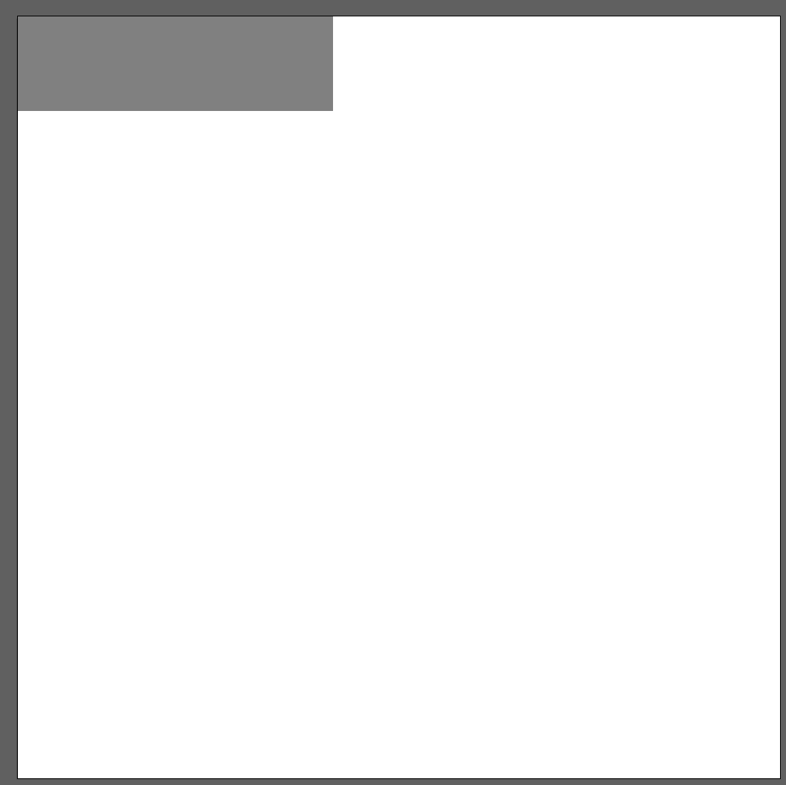
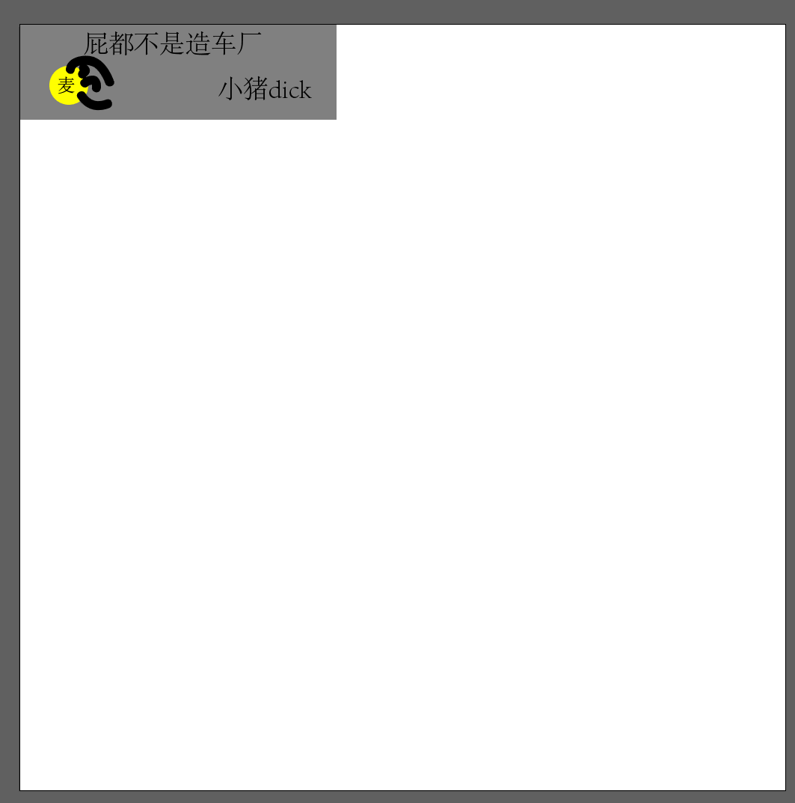
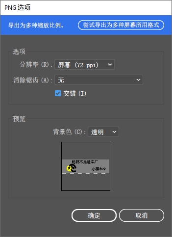
name.zip/assets/name/sounds/name.oggname:sounds/name.ogg
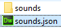
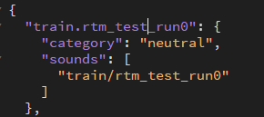
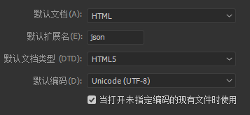
{
"name1":10・・・・整数
"name2":0.5・・・・数值（浮点数）
"name3":abc・・・文字
"name4":true・・・・真假值
"name5":[0,1,2]・・・・匹配UV
"name6":{・・・・编辑对象
"nemaname":"aaa"
}
}
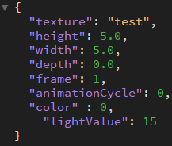
{
"useCustomColor":false ・・・ 是否允许更改游戏中的颜色
"tags":"name" ・・・模型选择画面中的搜索关键字（空格分隔符)
"defaultData":"scale=(double)1.0,type=(string)Normal", ・・・设置DataMap
"scale":1.0 ・・・NGTO模型专用
"offset":[0.0,0.0,0.0] ・・・模型绘制位置（从Enity中心的相对坐标)
"smoothing":true, ・・・平滑
"doCulling":true, ・・・ 单面表示（mqo和obj）
"accuracy":"low" ・・・ 注释(5.1)
"serverScriptPath":"scripts/server/ShieldMachine.js" ・・・服务器脚本路径
"guiSriptPath":"Sript/gui/RenderGuiFighther.js ・・・ GUI脚本路径
"guiTexture":"textures/gui/fighter_hud.png", ・・・ 交通工具GUI的自定义纹理
"renderAABB":[-0.5,0.0,-0.5,0.5,1.0,0.5] ・・・ 有无绘制判断用Box的大小
}
(5.1)可通过accuracy“设置点坐标的精度。
| LOW | MEDIUM |
|---|---|
| 有6.000的范围。如果是在这个范围内且不是很细的模型的话，选择这个可以减少内存使用量 | 通常 |
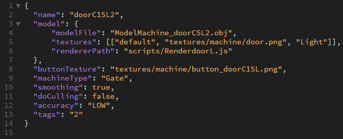
（切踏、屏蔽门的写法）
(1)规范脚本
在RTM中可以定制声音播放和模型绘制，通过脚本保留处理。形式是Javascript（以下简称JS）。关于JS的语法，这里不太详细说明。
关于可使用的方法，仅主要记载在这里。如果是RTM和NGTLIB的类public的方法全部可以调用，想详细知道的话请看附带的源代码。
(2)音效脚本
使用脚本而不使用默认的声音设置的话，可以通过速度和陷波来调整声音、音节、音量等，进行细致的控制。
以原版223系为例
function onUpdate(su){ ・・・每一tick调用方法
var speed = su.getSpeed();・・・获取现在的速度
var maxSp = 120;
var notch = su.getNotch();・・・获取现在的挡位
if(notch == 0){
su.stopSound('rtm', 'train.223_s0'); ・・・ 停止指定的声音，参数（・有包括sound.json的文件夹），・声音名称）
su.stopSound('rtm', 'train.223_s1');
su.stopSound('rtm', 'train.223_s2');
}else{
if(speed > 0.0){
su.stopSound('rtm', 'train.223_air');
if(speed < 20.0){
var vol = 1.0;
if(speed < 5.0){
vol = speed / 5.0;
}else if(speed > 10.0){
vol = (20.0 - speed) / 10.0;
}
su.playSound('rtm', 'train.223_s0', vol, 1.0);
}else{
su.stopSound('rtm', 'train.223_s0');
}
var pitch = 1.0;
if(speed >= 8.0){
var vol = 1.0;
if(speed < 12.0){
vol = (speed - 8.0) / 4.0;
su.playSound('rtm', 'train.223_s1', vol, pitch);
}else{
su.stopSound('rtm', 'train.223_s1');
}
var inTunnel = su.inTunnel();
if(speed >= 12.0){
pitch = (speed - 12.0) / (maxSp - 12.0) + 0.9;
su.playSound('rtm', 'train.223_s2', 2.0, pitch);
var vol = (speed - 12.0) / (maxSp - 12.0);
if(inTunnel){
su.stopSound('rtm', 'train.223_run');
su.playSound('rtm', 'train.223_run_tunnel', vol, 1.0);
}else{
su.stopSound('rtm', 'train.223_run_tunnel');
su.playSound('rtm', 'train.223_run', vol, 1.0);
}
}else{
su.stopSound('rtm', 'train.223_s2');
su.stopSound('rtm', 'train.223_run_tunnel');
su.stopSound('rtm', 'train.223_run');
}
}else{
su.stopSound('rtm', 'train.223_s0');
su.playSound('rtm', 'train.223_air', 1.0, 1.0);
}
}
}
参数“su”是负责语音控制的项目。使用其中的各种方法。suplay Sound也可以用于改变已经播放的声音的音量和间距。
| 名前固定 | value值 | 介绍 | 备注 |
|---|---|---|---|
| getSpeed() | float | 获取当前速度 | |
| inTunnel() | boolean | 是否在隧道里 | |
| playSound(# String domain, String path, float volume, float pitch, boolean repeat) | void | 播放声音 | |
| stopSound(# String domain, String path) | void | 声音停止 | |
| stopAllSounds() | void | 停止所有声音 | |
| getData(int id) | Object | 获得Data | |
| setData(Object value) | void | 设置Data | |
| getMaxSpeed() | float | 获取最高时速 | 列车专用 |
| getNotch() | int | 获取当前档位 | 列车专用 |
| getState() | byte | 获取最高时速 | 列车专用 |
| isComplessorActive() | booleam | 列车制动风 | 列车专用 |
value 值 的含义
数据类型包括基本类型和构造类型；基本数据类型又包括整形、实型、浮点型(float)、布尔型(boolean)、字符型(byte)；构造类型又包括数组类型、类、接口（多重继承）
float:是原始数据类型，赋值方法float b = 111.111f; //数字后面的f代表float类型，否则会报错。而Float，是对float的封装，是一个类，所以赋值时需要赋给一个对象
{
float a = 666.888
}
boolean:boolean是java中的布尔型（逻辑型）数据类型，在java中boolean值只能是true和false，而不能用0和1代替，并且一定要小写。
使用关键词 new 来定义 Boolean 对象。下面的代码定义了一个名为 myBoolean 的逻辑对象：
{
var myBoolean = new Boolean()
}
下面的所有的代码行均会创建初始值为 false 的 Boolean 对象：
{
var myBoolean = new Boolean(0 null "" NaN)
}
下面的所有的代码行均会创初始值为 true 的 Boolean 对象：
{
var myBoolean = new Boolean(1 true "true" "falae" "Bill Gates")
}
void:它代表的意思是什么也不返回，我们在开发过程中经常会用到，如一个方法不需要返回值时可以使用void关键字，在main方法中也是void关键字:
{
public static void getName() {
String name = "username";
System.out.println(name);
}
object:这种参数定义是在不确定方法参数的情况下的一种多态表现形式。即这个方法可以传递多个参数，这个参数的个数是不确定的。这样你在方法体中需要相应的做些处理。因为Object是基类，所以使用Object
{
public class Example{
Public void f(Object obj){
}
}
byte:通常在读取非文本文件时（如图片，声音，可执行文件）需要用字节数组来保存文件的内容，在下载文件时，也是用byte数组作临时的缓冲器接收文件内容。所以说byte在文件操作时是必不可少的。不管是对文件写入还是读取都要用到。
{
public class A {
public static void main(String[] args) {
int b = 456;
byte test = (byte) b;
System.out.println(test);
}
}
int: int表示的就是定义整型数据
{
public void demo(int[] n){}
}
var renderClass = 'jp.ngt.rtm.render.MachinePartsRenderer'; ・・・后面讲
importPackage(Packages.org.lwjgl.opengl); ・・・准备使用GL 11类
importPackage(Packages.jp.ngt.rtm.render); ・・・准备使用Parts类
importPackage(Packages.jp.ngt.ngtlib.math); ・・・使用NGTMATH等级的准备（任意）
var turnR; ・・・全局变量
function init(par1, par2) ・・・初期化处理（後述、必��）
{
main = renderer.registerParts(new Parts('pole', 'light_a', 'light_b', 'body1', 'body2', 'body3', 'dirB', 'body4', 'base', 'dirR', 'dirL'));・・・创建部件，并列出用于该部件的对象名称
lightL = renderer.registerParts(new Parts('light_L', 'dirR'));
lightR = renderer.registerParts(new Parts('light_R', 'dirL'));
bar = renderer.registerParts(new Parts('bar0', 'bar1'));
turnR = (renderer.getModelName().equals("CrossingGate01R")); ・・・变量初始化，这里准备了根据模型名称分开处理的变量
}
function render(entity, pass, par3) ・・・贴图处理（後述、必��）
{
GL11.glPushMatrix(); ・・・保存当前坐标状态(glPopmatrix（）和组合使用)
var light = renderer.getLightState(entity);
if(pass == RenderPass.NORMAL.id) ・・・绘制常规部件
{
main.render(renderer); ・・・绘制部件
GL11.glPushMatrix();
var move = renderer.getMovingCount(entity) * (turnR ? 90.0 : - 90.0);
renderer.rotate(move, 'Z', 0.0, 0.5337, -0.24); ・・・Z轴旋转
bar.render(renderer);
GL11.glPopMatrix();
switch(light)
{
case 0: lightL.render(renderer);break;
case 1: lightR.render(renderer);break;
}
}
else if(pass == RenderPass.LIGHT.id) ・・・绘制发光部件
{
switch(light)
{
case 0: lightR.render(renderer);break;
case 1: lightL.render(renderer);break;
}
}
GL11.glPopMatrix(); ・・・调用以glPushmatrix（）保存的坐标状态
}
创建部件，并列出用于该部件的对象名称
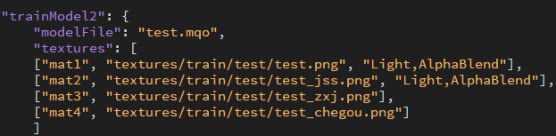
绘制发光部件
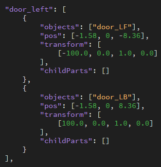
"jp.ntg.rtm.render.FireamPartsRenderer" 武器
""jp.ngt.rtm.render.MachinePartsRenderer" 有功能的设置物
""jp.ngt.rtm.render.NPCPartsRenderer" NPC
"jp.ngt.rtm.render.OrnamentPartsRenderer" 无功能安装物
"jp.ngt.rtm.render.RailPartsRenderer" 铁轨
"jp.ngt.rtm.render.SignalPartsRenderer" 信号机
"jp.ngt.rtm.render.VehiclePartsRenderer" 载具
"jp.ngt.rtm.render.WirePartsRenderer" 线
"RenderPass.NORMAL.id" 普通部件绘制
"RenderPass.TRANSPARENT.id" 透明部件绘制
"RenderPass.LIGHT" 绘制发光部件
"RenderPass.LIGHT_FRONT.id" 绘制发光部件(前)
"RenderPass.LIGHT_BACK.id" 绘制发光部件(后)
"RenderPass.OUTLINE.id" 选择部件时绘制轮廓
"RenderPass.GUI.id" ## 现在没屁用
"RenderPass.PICK.id" 右击判定用
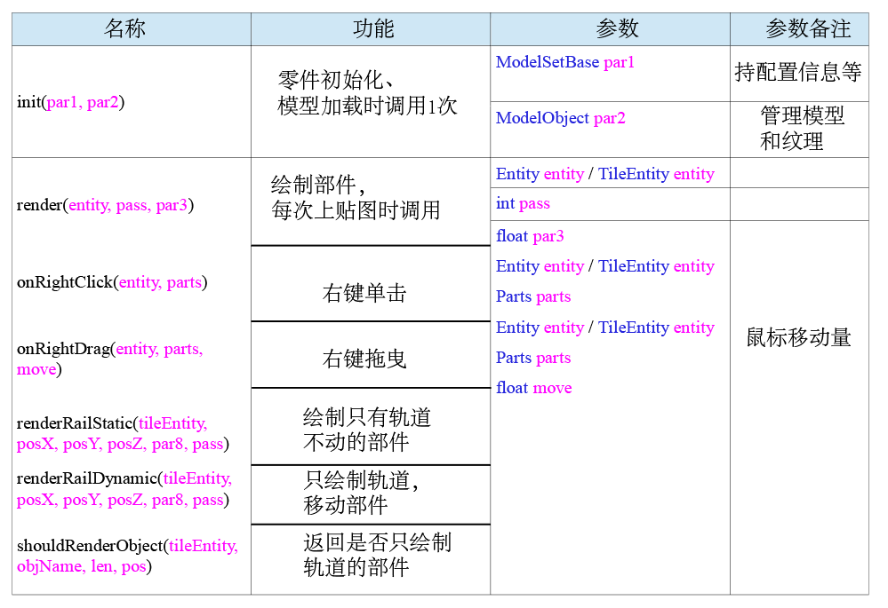
| 类型 | 主体 | 后缀 | 备注 |
|---|---|---|---|
| - | 物 | 品 | - |
枪械 |
ModelFirearm_ | - | 无 |
铁轨 |
ModelRail_ | - | 无 |
信号机 |
ModelSignal_ | - | 无 |
集装箱 |
ModelContainer_ | - | 无 |
NPC |
ModelNPC_ | - | 无 |
线 |
ModelWier_ | - | 无 |
看板 |
SignBoard_ | - | 无 |
标记 |
RRS_ | - | 不用json |
信号（中转） |
ModelConnector_ | Relay | 无 |
信号（输入） |
ModelConnector_ | Input | 无 |
信号（输出） |
ModelConnector_ | Output | 无 |
道闸（切踏） |
ModelMachine_ | Gate | 无 |
重点
#（未知） |
ModelMachine_ | Point | 无 |
道闸（乘车） |
ModelMachine_ | Turnstile | 无 |
买票机 |
ModelMachine_ | Vendor | 无 |
照明（标记） |
ModelMachine_ | Light | 无 |
驻车器 |
ModelMachine_ | BumpingPost | 无 |
ATC |
ModelMachine_ | Antenna_Send | 无 |
列车检测器 |
ModelMachine_ | Antenna_Receive | 无 |
照明 |
ModelOrnament_ | Lamp | 无 |
楼梯（斜） |
ModelOrnament_ | Stair | 无 |
楼梯（平） |
ModelOrnament_ | Scaffold | 无 |
架线柱 |
ModelOrnament_ | Pole | 无 |
管道 |
ModelOrnament_ | Pipe | 无 |
植物 |
ModelOrnament_ | Plant | 无 |
| 轨 | 道 | 机 | 车 |
电力机车 |
ModelTrain_ | EC | 无 |
动力机车 |
ModelTrain_ | DC | 无 |
货物车 |
ModelTrain_ | CC | 无 |
坦克（火炮车） |
ModelTrain_ | TC | 无 |
测试车 |
ModelTrain_ | Test | 无 |
| - | 载 | 具 | - |
轿车 |
ModelVehicle_ | Car | 无 |
飞机 |
ModelTrain_ | Plane | 无 |
船 |
ModelTrain_ | Ship | 无 |
源素材
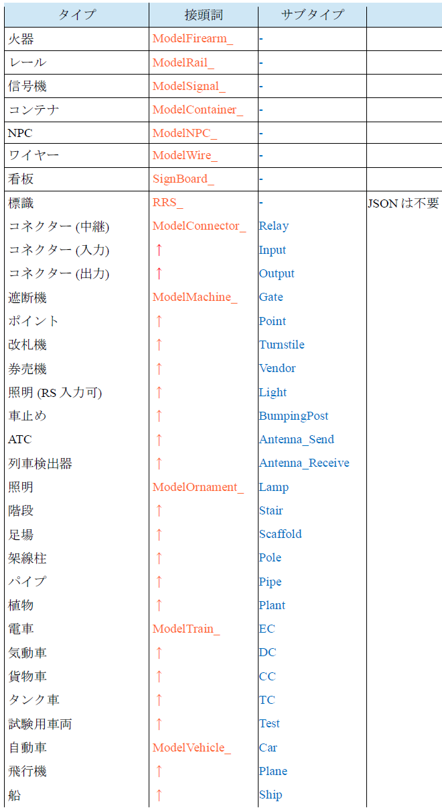